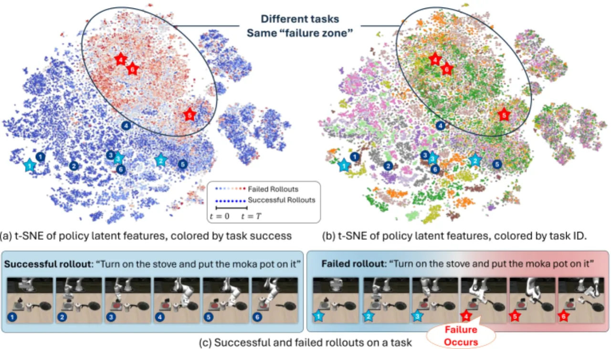
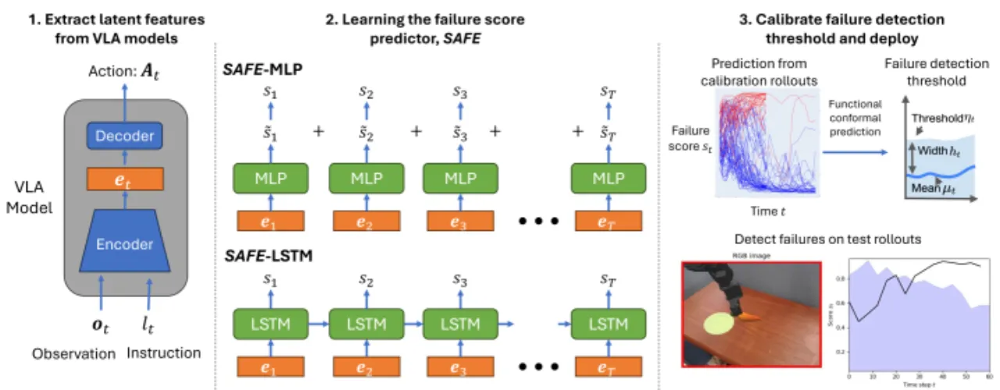
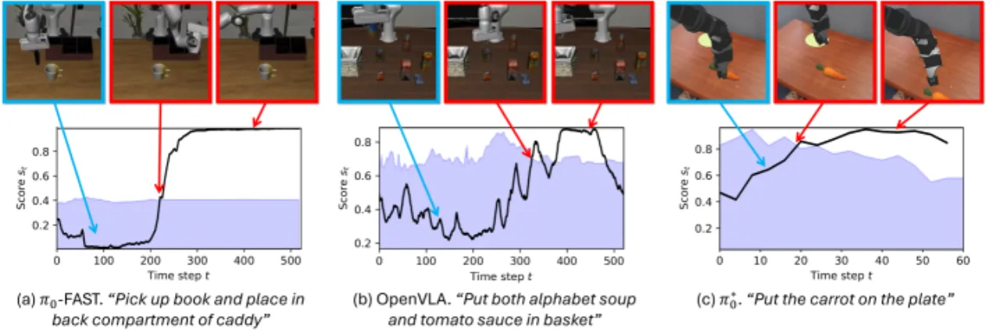
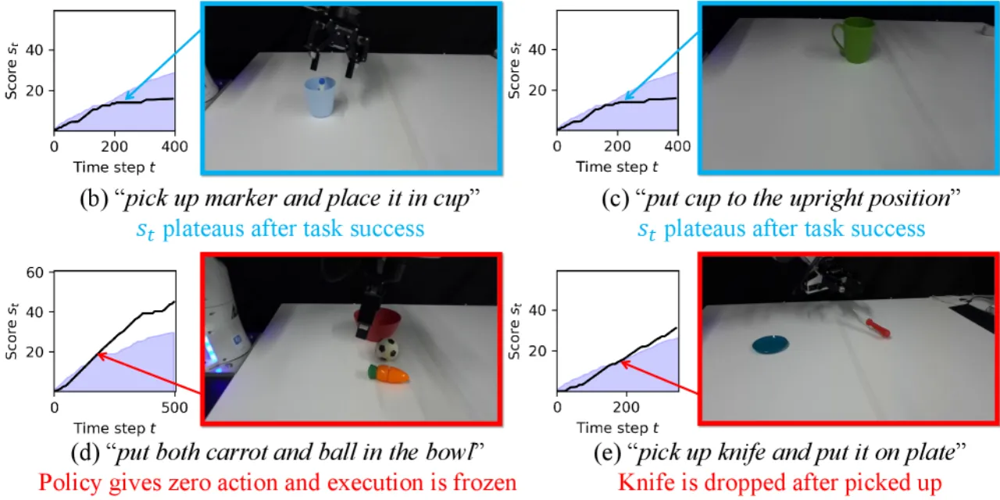
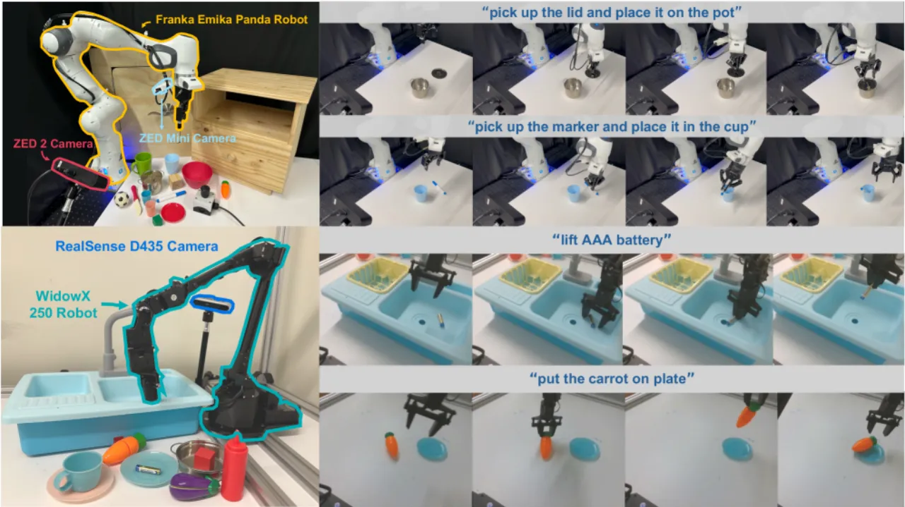

通用 VLA 策略在未见任务上成功率会大幅下滑，急需一个能及时报警的失败检测器。SAFE 发现 VLA 的内部特征已经蕴含了关于任务成败的高层通用知识——失败时不同任务的特征会落入同一个 “failure zone”。据此，SAFE 从 VLA 最后一层特征学习出单一标量失败分数，训练于已见任务而泛化到未见任务，并用 functional conformal prediction 给出随时间变化的报警阈值。
大规模 VLA 已成为可跟随语言指令、完成多样任务的通用策略；但一旦直接部署到未见任务而不采集新数据微调，成功率就明显下降。论文引用近期评测：VLA 在已见任务上成功率约 80–90%，但在未见任务上会跌到 30–60%，并伴随多种失败模式。要安全可靠地部署，就需要一个能及时报警、让机器人“停下、回退或求助”的失败检测器。
然而现有失败检测器几乎都只在一个或少数固定任务上训练与测试；而通用 VLA 要求检测器能泛化，在未见任务与新环境下同样识别失败。论文因此提出全新的 multitask failure detection 问题设定：检测器只在已见任务上训练，却在未见任务上评估。
“When the VLA is failing, the features, even those from different tasks, fall into the same ‘failure zone’.” —— 这一观察正是 SAFE 的出发点。

SAFE 由三部分组成：(1) 从 VLA 模型最后一层抽取 latent 特征；(2) 用 MLP 或 LSTM backbone 顺序处理特征并预测失败分数；(3) 用 functional conformal prediction (CP) 在留出的校准集上确定一个随时间变化的阈值——一旦预测分数超过阈值就报警。设计刻意保持简单（仅一到两层），以避免过拟合、提升在未见任务上的泛化。

检测器 f(e₀:ₜ) 以到当前时刻 t 的 VLA 特征序列为输入，预测失败分数 sₜ。论文探索两种 backbone：
特征的聚合方式（如何把 VLA 各 token 的隐向量并成单一 embedding e）作为消融项在已见评测集上选优。SAFE 与具体 VLA 架构解耦，因而可套用在 OpenVLA、π₀、π₀-FAST 等不同策略上。
SAFE 用 functional CP 在留出校准集上标定一条随时间变化的置信带 C_α：用户指定的显著性水平 α 越小、带越宽（越保守、报警越晚）。测试时失败分数一旦突破 C_α 即触发失败标志。这样 SAFE 能在检测精度与检测时延之间取得可调的权衡，并给出带统计保证的报警时机。
在仿真（LIBERO、SimplerEnv）与真机（π₀-FAST + Franka、OpenVLA + WidowX）上，跨 OpenVLA / π₀ / π₀-FAST 评测，主指标为 ROC-AUC（越高越好，衡量在所有阈值上平均的检测精度）。对比涵盖 uncertainty quantification 与 failure detection 两类多样 baseline：Token Uncertainty、Sample Consistency、STAC、Embedding Distance（Mahalanobis 距离、Euclidean k-NN）等。
| Baseline 类别 | 论文对其表现的结论 |
|---|---|
| Token Unc.（token 不确定性） | 表现差，与 LLM 文献一致 |
| Sample Consist. / STAC | 较好，但需每步采样多个 action，开销大、真机不实用 |
| Embed. Distr.（Mahala. / k-NN） | 表现好，两个仿真基准最佳、真机第二，印证内部特征富含成败信息 |
| SAFE-MLP / SAFE-LSTM | 在所有设定下均优于或持平最佳 baseline，且只需 1 个 action |
关键结论（verbatim）：跨仿真基准平均，SAFE-MLP 与 SAFE-LSTM 表现相近，在未见任务上比最佳 baseline 高 4–5%，同时在已见任务上仍取得最佳。真机上（π₀-FAST+Franka 与 OpenVLA+WidowX）SAFE-MLP 取得最佳，SAFE-LSTM 与最佳 baseline（Mahala. dist. 和 Euclidean k-NN）接近。相比 Embedding Distance 方法，SAFE 的优势归因于它通过学习到的神经网络从原始特征中提取高层抽象信息的更强能力。



论文进一步消融了特征聚合方式、训练任务数量（Table 6）、以及不同 visual encoder / backbone 架构（Table 7）；并对比了 failure detection、uncertainty quantification 与 OOD detection 三者的关系。整体表明：VLA 最后一层特征已足以支撑跨任务的失败判别，而如何跨多层聚合信息仍是开放问题。
论文只考虑操作类任务的多任务失败检测，尚不清楚检测器在跨 embodiment、sim2real 迁移或 action-less video 上的泛化能力如何。
SAFE 只使用 VLA 最后一层的特征；如何有效地跨 VLA 多层聚合信息，仍是未来工作的开放问题。
训练需要成功与失败两类演示，且 functional CP 阈值需在留出校准集上标定；在无法采集足量失败样本或校准分布偏移时，报警时机与精度可能受影响。此点为根据方法设计推断，非论文明述。